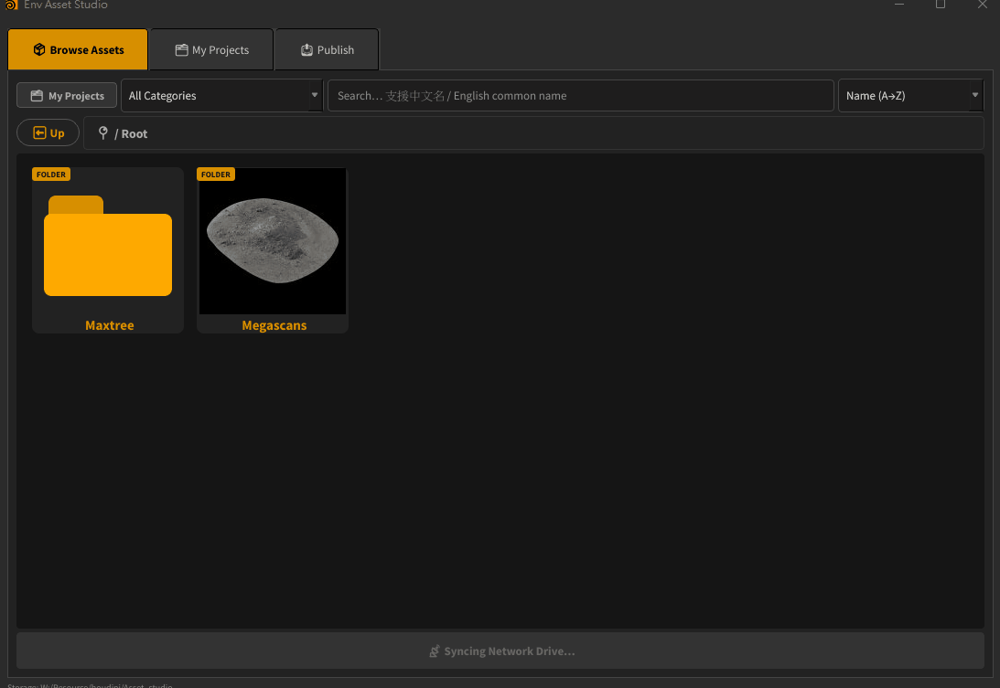
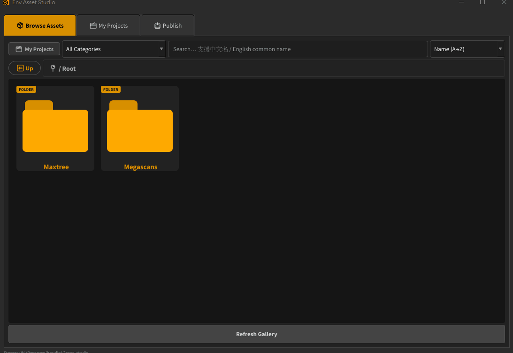
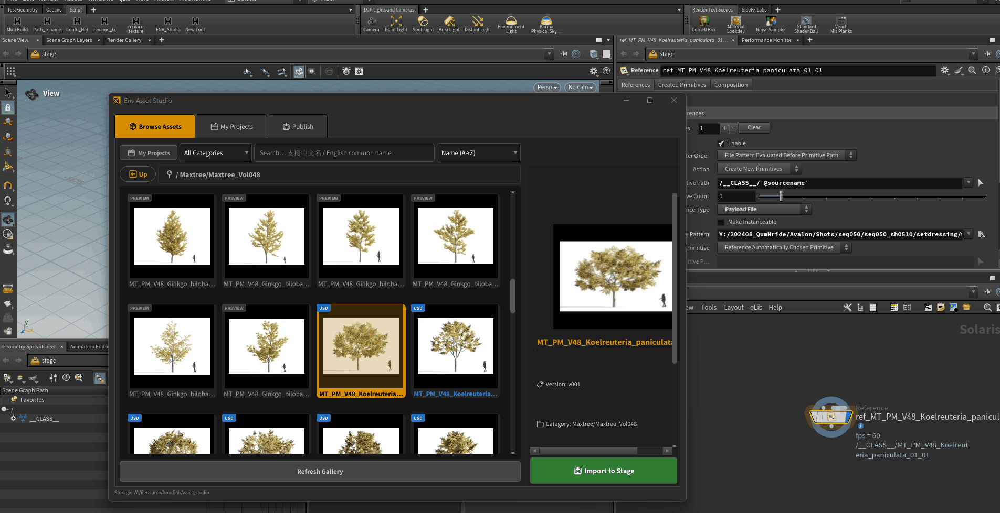
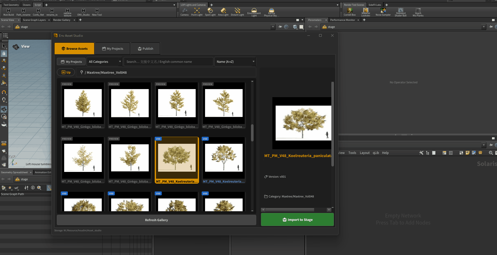
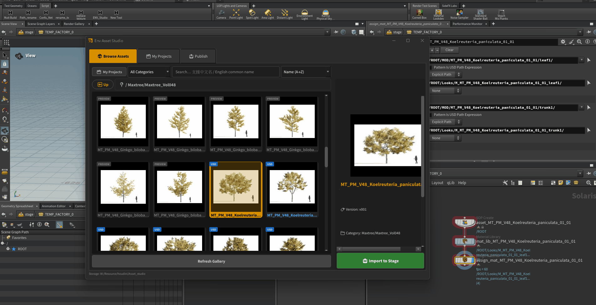

Houdini 21 · USD Pipeline · Avalon
為環境特效設計的 USD 資產管理工具。
自動將 Maxtree 植物資產轉換為 USD，整合可視化瀏覽介面，
架構完整符合 Avalon pipeline。
在 Browse Assets 頁籤中，可以即時預覽所有植物資產縮圖， 不需要逐一開啟檔案確認。搜尋欄位同時支援學名（英文）和 中文常用名，例如輸入「草」、「松樹」、「樹木」即可快速篩選出 對應資產。

除 Maxtree 植物外，工具同步整合 Megascans 所有資產類別， 統一在同一個介面中瀏覽與管理，不需要在不同工具之間切換。

選好資產後，點擊 Import to Stage 即可將 USD Reference 匯入 Houdini Solaris。支援一次多選，批次匯入多個資產。

可以直接匯入 hip 檔案來編輯 USD 內容，完成後重新 Publish 回資料庫。這套工具設計上以可擴充性為優先，任何人都可以將 自製的資產發佈進來，不受限於預設的 Maxtree 或 Megascans 內容。

My Projects 頁籤讓每個專案擁有自己的植物資產清單。可以先按照 需求分類整理，完成後再一次批次轉換為 USD，流程乾淨、不影響 主資料庫。
